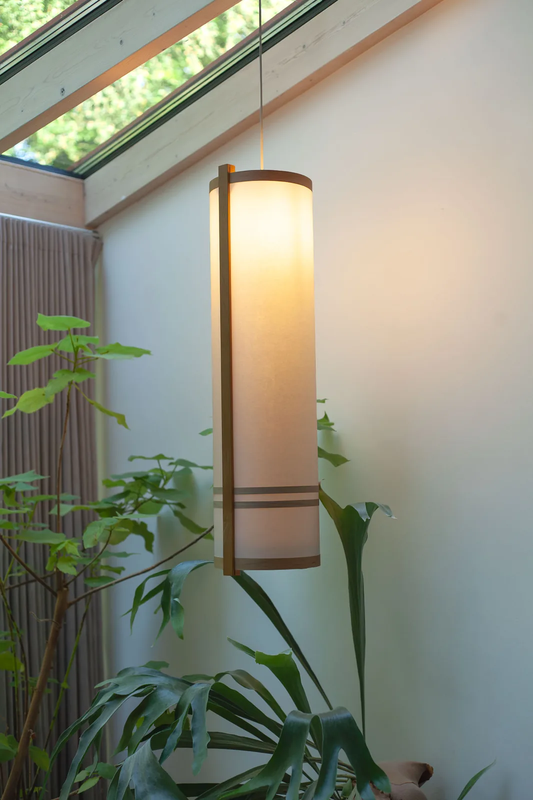
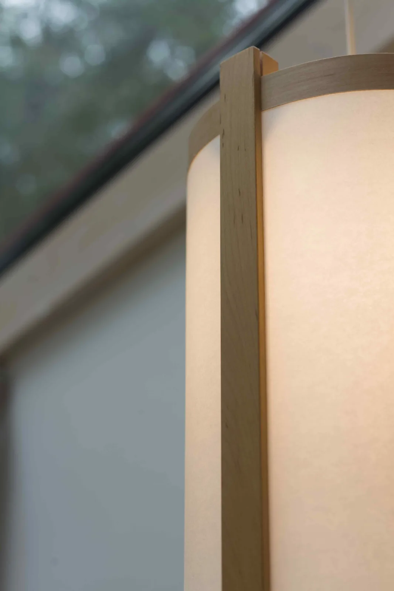

- Afmetingen
- 90 × 25 cm
- Hout
- Esdoorn — andere soorten op aanvraag
- Papier
- Naar keuze — kozo washi, unryu kozo of kinwashi
- Prijs
- € 220
Hanglamp
De hanglamp Kawa is van een lichte houtsoort als esdoornhout en voorzien van Japans papier naar keuze.

